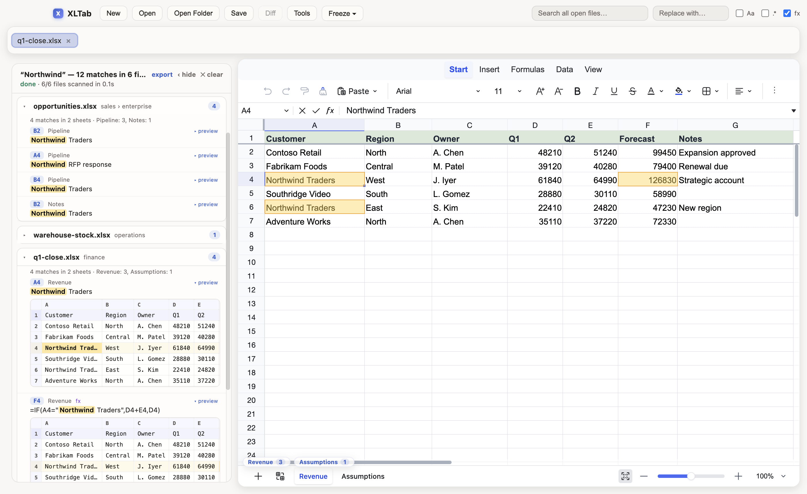

Free · Offline · Windows
Search every workbook. Open only the one that matters.
XLTab scans an entire root folder of xlsx, xlsm, xls and csv files without opening workbook tabs. Matches stream in, grouped by file and sheet, with inline row previews. Click one and only that workbook opens at the exact cell — then keep working in a fast, tabbed spreadsheet workspace.

Why
Built for people who live in many spreadsheets at once
Excel is one window per workbook, and its search stops at the file you're in. If the answer is somewhere in a project folder, the hunt becomes alt-tab chaos. XLTab treats many workbooks as one searchable workspace — even before you open them.
Excel comparison refers to multi-workbook capabilities, November 2026. XLTab is a companion workspace, not a full Excel replacement — see the honest limits.
The workspace
See it in action
Real captures of the shipping app — every feature has its own deep-dive.


Private by design
Your files stay on your machine
Workspace search runs on demand, locally, only against the root you choose. There is no background index, cloud sync, account, analytics or telemetry. Saved workbooks remain standard .xlsx files you can open in Excel.
FAQ
Questions, answered
Can XLTab search files without opening them?
Yes. Choose Tools → Search across files…, paste or browse to any root folder or spreadsheet file, and start a search. XLTab scans recursively without opening workbook tabs, streams progress and grouped results, and can use the cache for fast refinement. It scans xlsx, xlsm, xls and csv files; convert legacy .xls files to .xlsx when you need dependable editing.
Is XLTab really free?
Yes. All features, no subscription, no account, no trial period.
Does it replace Excel?
No — it's a companion workspace for working across many files. It covers the everyday essentials: creating blank workbooks, editing, formulas, filtering, sorting, merged cells, styles, number formats, conditional formatting and data validation. It does not do pivot tables, charts, macros/VBA or Power Query. Files you save stay standard .xlsx and open fine in Excel.
Will my formulas survive a round-trip?
Yes. Formulas are preserved as formulas in the file — including modern functions like XLOOKUP — and recalculate in Excel exactly as before. The validation suite checks this continuously.
Does it need internet?
No. XLTab is fully offline — every feature works without a connection, and the app makes no network calls. Your files never leave your machine.
Which files can it open?
.xlsx, .xlsm (content, not macros) and .csv. Workspace search can also scan legacy .xls files. For editing and saving, standard .xlsx is the dependable format.
Who makes XLTab?
One independent developer — no company, no investors, no data to monetize.
Where can I report a bug or request a feature?
Open an issue in the XLTab GitHub repository.
Find the right workbook in seconds.
Free. No account. Two-minute install from the Microsoft Store.